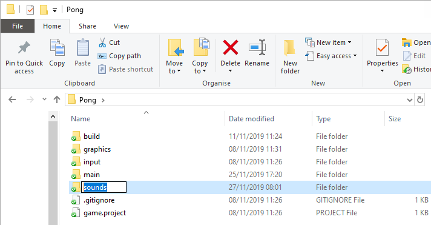
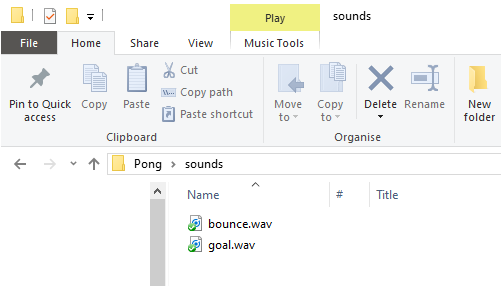
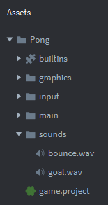

Tutorials for 2D games projects
Pong | Importing sound files into the game.
- Using Windows Explorer, find your Pong project folder and create a new folder called 'sounds'.

- Inside the sounds folder, download and save these sounds.
Right click each file below and choose, 'Save link as...'
bounce.wav goal.wav

Go back to Defold and you should see the new folder and file in the assets panel. Note there is no way to import sounds into Defold using the IDE. You have to do this in Windows.

The next stage is to create sound objects that will use these sounds. Stage 9b >
 Craig'n'Dave | Version 1.3
Craig'n'Dave | Version 1.3